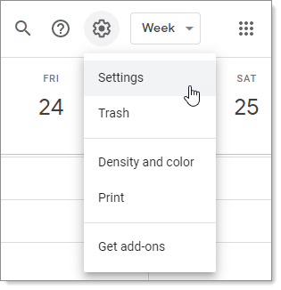
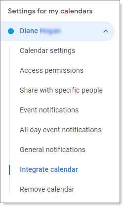
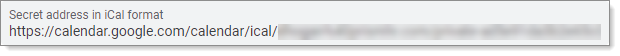
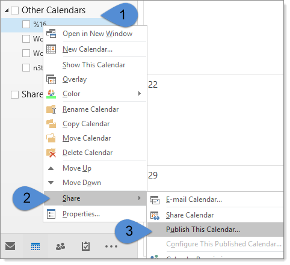
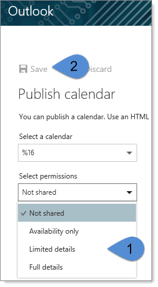
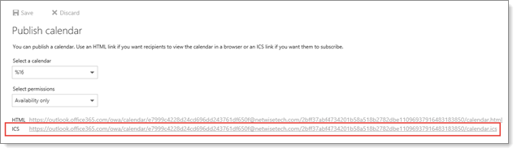

The User Details form opens.
To add visibility into a Gmail calendar, you need to export the Private URL for the Gmail Calendar.
To add Gmail calendar availability:
Open your Gmail calendar and go to Settings.

The Settings page opens.
On the left under Settings for my calendars, select the calendar you would like to include.
Click Integrate calendar.

The Integrate Calendar page opens.
Locate the link Secret address in iCal format.

Right-click the URL and select Copy.
In  My Profile.
My Profile.
The User Details form opens.
Paste the private URL you just copied into External Calendar URL.
Click Save.
Selecting Attendee availability on a
To add visibility into an Outlook calendar, you will need to export iCalendar ICS URL.
To add visibility into an Outlook calendar:
Open the calendar in Outlook.
Right-click the calendar you would like to share.
Select Share > Publish This Calendar.

For Office 365 clients, you will be asked to log in and will then be presented with the option to select the calendar and the sharing permissions you would like to allow.
After you choose a sharing option, select Save.

The page will then display both the HTML and ICS URLs for sharing.
Right-click the ICS and select Copy.

In  My Profile.
My Profile.
The User Details form opens.
Paste the ICS URL you just copied into External Calendar URL.
Save the profile.
When you select Attendee availability on a
The system checks for the last time you refreshed your Outlook calendar.
If it has been more than 30 minutes, the system retrieves all active calendar events for the next 3 months and displays them in the Free / Busy area.
External Events are visible in the system calendar and Free/Busy management but cannot be opened or edited.
Watch the video